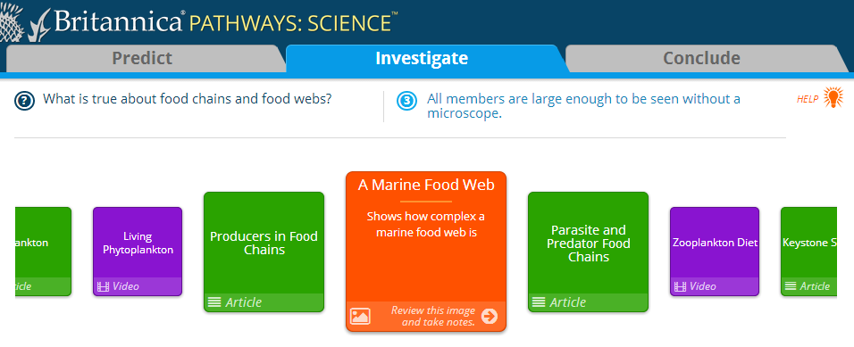
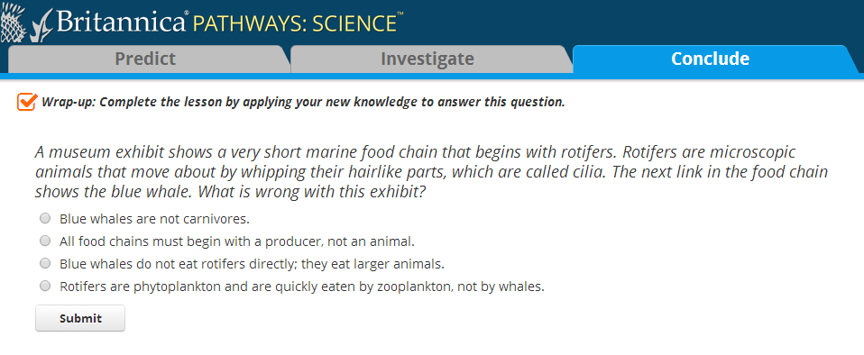
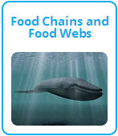

Try out some new ideas for Britannica Pathways: Science
Let us know your honest opinion!
We, at Britannica, are thinking about new types of resources to add to the Investigate section of Pathways. In addition, we are considering adding drag-and-drop questions to the wrap up in each lesson. We would like to know what you think about these ideas and the samples below.
| What might Britannica add to Pathways? |
How would they be used? |
|
New Investigate Resources would be more interactive and engaging for the student. In some cases, the new resource would focus on data, graphs, and data interpretation.

|
Students would use these new resources to investigate the lesson topic just as they do with the current resources. While interacting with the new resource, students would take notes to use later in the lesson when they draw their final conclusion.
|
|
New Wrap-up Questions would resemble some of the drag and drop questions found on the PARCC and Smarter Balanced Assessments.

|
Students would complete the additional wrap-up question at the end of a Pathways lessons.
|
Sample Set One
The first set of samples accompanies the Food Chains and Food Webs lesson that is part of The Environment topic.
|  |
Investigate Resource Sample
-
Simulation: Place each organism in its feeding level in the food web.
- Note that you do not have to login, just skip this step.
- DISCLAIMER: Britannica did not produce this simulation. It was created by the Coastal Ocean Observatory Laboratory room (coolclassroom.org). We do not intend to use this in Pathways and only want to see if you like this type of activity.
- Classify the organisms by dragging them into the correct bin.
- Classify the statements by dragging them into the correct bin.
|
Sample Set Two
The second set of samples accompanies the Earth’s Seasons lesson that is part of The Universe topic.
 |
Investigate Resource Carousel Samples
- Table and Graphs: Examine the graphs relating the position of the Earth and Sun relative to one another throughout the year.
-
Simulation: Simulate the seasons and examine the geometry of the Earth and Sun over the course of a year.
- DISCLAIMER: Britannica did not produce this simulation. It was created by The University of Nebraska-Lincoln as part of the Nebraska Astronomy Applet Project (astro.unl.edu/naap). We do not intend to use this in Pathways and only want to see if you like this type of activity.
- Complete the image by dragging images into their correct location.
- Classify the statements by dragging them into the correct bin.
|